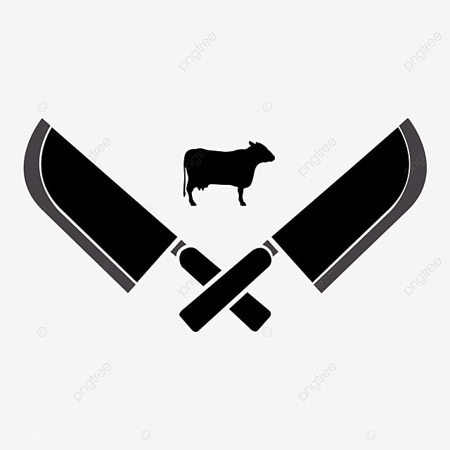

Blanc de poulet
5€30/kg
5€30/kg
Boucherie Dujardin 
Bienvenue sur le site de la boucherie artisanal de la ville de Clermont-Ferrand
Eric Dujardin, 44 ans
Boucher de père en fils sur 3 génération. Gérant de la boucherie artisanal de Clermont-Ferrand. Il perpétue le savoir faire de ces grands-parents en proposant des produits animals de qualités et des produits du terroire.

Adresse : 25 Rue de la Liberté, Clermont-Ferrand, 63000
Tel : 09.43.11.22.88
Email : boucherie.dujardin@gmail.com
Partenaire du Ministère de l'Agriculture
Voici les selections du moment :